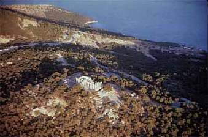
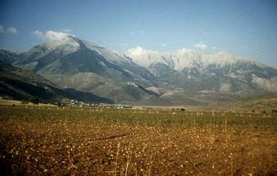

|
Perseus 2.0: Interactive Sources and Studies on Ancient Greece (Concise Edition). Gregory Crane, Editor-in-Chief. Yale University Press CD-ROM, 2000. ISBN 0-300-08091-3. Price: $150.00. Platform-Independent Version. System requirements:
Windows users: Windows 95, 98 or NT. (May run on Windows 3.x with Win32s.) 486 PCs and above 16 MB of total RAM, 4 MB of free space on hard disk, CD-ROM drive, SVGA or VGA monitor with 256 colors. Macintosh users: PowerPC processor or later, Mac OS system 8 or later, at least 5 MB of free RAM; 10 MB preferred, 3.5 MB of free space on hard disk, CD-ROM drive, color monitor. [Related WWW site:
http://www.perseus.tufts.edu].
|  |
Aegina, Altar of Aphaia. Aerial view.
Photo by: Raymond V. Schoder. Source: Perseus 2.0. |
|
The Perseus Project, overseen by Gregory Crane and based at Tufts University, is a remarkable achievement. It is an attempt to create an interactive collection of sources and studies relating primarily to Classical Greece, although it does venture earlier and later. Perseus brings together texts, images (including views of sites, site plans, vases, sculpture, coins), maps, and historical, literary, archaeological and art-history information. Although some of these materials may be available elsewhere in electronic form, Perseus presents them in a convenient and readily accessible fashion that allows the user to jump freely between categories. One may easily shift from examining images of Scythians on Attic vases to Herodotus' description of them, or from a site plan and views of Olympia to Pindar's epinician odes or Pausanias' description of the sanctuary and athletic complex.
| |
Opening screen of Perseus 2.0. |
|
Users of Perseus start from the Gateway, which offers a number of choices. The Browser is a powerful tool which allows one to search the Perseus database of architectural views, coins, sculpture, archaeological sites, and vases. This searching can be done under a number of headings, depending on the artifact. The options for vases are the most extensive: the database is searchable under the categories of collection, shape, ware, context, potter, painter, period, region, and—extremely useful—under a number of keywords including activities, objects, generic scenes, mythological scenes. Under the keyword clothing, one can find all the vases in the database on which trousers appear, and then click on any one of these vase listings for a complete catalog entry, including a description, bibliography and a selection of images of the vase. Many of these images are not available elsewhere. Whenever possible, the vases have been specially photographed for Perseus by Maria Daniels, and are clear, in color, and—most importantly—show the vase from several different angles with detailed close-ups. But users of the Concise Edition are in for a bit of a disappointment. The images are often available in thumbnail form only, and one is told to insert Disk Two or Three or Four to get a full image. The solution is either to buy the Comprehensive Edition (ISBN 0-300-08092-1, price $350.00) and install all four disks on the hard drive to avoid shuffling CDs (this requires 2 gigabytes of space), or, more simply, to access the Perseus Web site, http://www.perseus.tufts.edu, where all images are available.
| |
Historical Overview menu page of Perseus 2.0. |
|
The Historical Overview has been specially written for Perseus by Thomas R. Martin. The text, which might function as an extremely handy resource for an introductory Greek history class for undergraduates, covers the standard span from the end of the Mycenean period down to the death of Alexander. Attention is devoted to social history, with sections on housing, slavery, the position of women, religion, as well as the standard political and military history, which is adequately covered for the purposes of an introductory undergraduate course. Nonetheless, I felt the need for more detail in some places, for example the reforms of Cleisthenes: just how he seems to have attempted to break up areas under the control of one clan by grouping demes from different and sometimes widely separated regions of Attica together into artificially created tribes is not explained.
|
Athena on vase. Link from
section 5.1 of Historical Overview |
|
The overview is studded with direct links to primary texts, which are displayed in both Greek and English versions, site plans, images of various kinds—views, buildings, sculpture, vases, coins—and references to Perseus' Atlas. For the most part, these are useful links. In the discussion of the battle of Salamis (section 8.4.2) there are links to descriptions by the primary authors Herodotus, Plutarch, and Pausanias (Aeschylus' Persae might be added here); a map showing the location of Salamis, but not illustrating the battle; and a modern reconstruction of a trireme. Some of these links need to be fine-tuned: at 12.1.12.1 (Mutilation of the Herms) a link to sculptures of herms takes one to the Browser, but gives no further help. One has to know to look under the Keyword menu for Objects and then under this menu for herm. Or at 4.6 (Homer and the Social Values of Greek Aristocrats), a link to Homer's Iliad 6.440f. takes one to the right place in the Greek text, which is highlighted, but the relevant part of the English text is not visible. Sometimes obvious links are not made: at 4.3 (Agricultural Resurgence) and 6.20 (The Athenian Population in the Dark Age) a woman's terracotta storage chest, shaped like a miniature granary, is described at some length, but there is no link to any image. While discussing ostracism (9.2.4), why not show pictures of actual ostraka, for example those found in the Agora with Themistocles' name scratched on them? One also misses explanatory maps in the discussion of the battles at Syracuse or at Pylos, where the links are simply to images and plans of the Mycenean palace, and offer no help in understanding Thucydides' description. Links to at least a few important inscriptions, such as the Erythrae decree, would be even more useful to supplement the primary authors and to show students a different kind of evidence. Lastly, a bibliography of secondary reading for those interested in more detailed treatments might be included, or links made to relevant items on the Perseus bibliography found under Tools & References.
|
Satellite map selection of southeastern
Greece from Perseus 2.0 Atlas. |
|
Perseus' Atlas is a powerful tool; on Perseus 2.0, it covers mainland Greece, southern Italy and Sicily (Magna Graecia), Thrace, the islands, and parts of Asia Minor. Users are offered outline maps, digital elevation maps, and for mainland Greece, beautiful satellite images compiled from Landsat photographs. Atlas tools allow one to zoom in or out and to plot sites selected from a menu on any of these maps, an extremely useful feature for the classroom. Any number of sites can be plotted on one map, and distances (as the crow flies) can be calculated between selected points.
The collection of Primary Texts is a gem. Here are grouped works of the Greek authors likely to be most useful to Perseus users: the historians Herodotus, Thucydides, Diodorus (selections), Plutarch (selected lives), Xenophon (but no Arrian or fragmentary works); the orators; Strabo (selections); Pausanias; Aristotle (selected works); Apollodorus; the three tragedians; Aristophanes; Homer; Hesiod; Pindar; and Bacchylides. Users of the Web site now have access to a small number of Latin authors. The texts—both the original Greek and the English translation, displayed opposite each other—come from the Loeb series, published by Harvard University Press. The translations thus sometimes suffer from that peculiar style affected by the early editors of the series (e.g. Homer, Iliad 9.449 "for he waxed grievously wroth against me by reason of his fair-haired concubine"), which in some instances may puzzle students or turn those without much endurance away. But some of the translations of Aristophanes are those of Jefferey Henderson's edition and cannot be accused of quaintness (the opening line of The Clouds begins like a Peanuts strip: "Aargh!") and certainly not of bowdlerism.
| |
Morphological analysis tool in Perseus 2.0. |
|
Perseus offers more than just a collection of these texts; it also provides a whole box of Philological Tools to search and analyze them. The authors can be searched individually (a search of all authors together does not seem possible) for occurrences of words (in Greek) either singly or in combination with another word. The frequency of a particular word can also be calculated. But what sets Perseus apart from other search programs I am familiar with is the morphological analysis tool: a user can select an unfamiliar word in a Greek text, click on the Analyze button, and will be told what part of speech it is and in the case of a verb, for example, what the first principal part is and what mood, tense, voice and person it could be. I say "could be" because the morphological analysis tool can only present you with possibilities: it can tell you that a given verbal form could be first person sing. future indicative active or first person sing. aorist subjunctive active, but cannot tell you which of these alternatives is correct in the context. Fair enough. I have however noticed some mistaken analyses: at line 466 of [Aeschylus] Prometheus Bound the noun khlidês yields the following two analyses: pres. ind. act. 2nd sg. of the verb khlidaô (impossible—no such form of this verb is attested as far as I can find in the TLG) and fem. gen. sg. of the noun khlidê (correct). The Latin morphological tool on the Web site also suffers from a mistake: at Catullus 1.3, Corneli is analyzed as "masc./neut. gen. sg." of Cornelius—perfectly possible of course (though not in this context), but the correct analysis, viz. vocative sing., is nowhere to be found. Other vocative forms in -i are similarly incorrectly analyzed in the text of Horace's Odes. Teachers of Greek (those that have heard of Perseus!) are divided on whether to share their knowledge of the existence of the morphological analysis feature with their students or not. Some object to it because it may encourage students to become overly passive and reliant on the (not always correct) analyses of others instead of actively attempting by themselves to analyze forms and so consolidate their grammatical knowledge and improve their reading skills. Others will reply that any tool that eases the student's path in those situations where he or she simply cannot work out a form should be made freely available to them and that only a small number will abuse it. Perseus provides another textual tool, which is less problematic and extremely handy: by pulling down the Related Tools menu one can look the word up in an electronic version of Liddell and Scott's Intermediate Greek-English Lexicon (the Web site offers the ninth edition of the larger Greek-English lexicon, with direct links to passages mentioned in entries).
|  |
The snow-capped peaks of Mount Parnassos in Phocis, Greece—
viewed from the Northeast. Photograph from the Saul S. Weisberg
Collection, Department of Archaeology, Boston University. From
Curtis Runnel's regional descriptions in Perseus 2.0. |
|
The Concise Edition also features Essays and Catalogs, among which one can find Caskey and Beazley's Attic Vase-Paintings in the Museum of Fine Arts, Boston, complete with plates, and Andrew Stewart's Greek Sculpture. Here links to images of extant works (or copies thereof) by the sculptors could be added to the links to ancient descriptions. The same could be done for Alan Boegehold's useful essay, "Three Court Days": the explanation of the klêrôtêrion, for example, would benefit from a diagram and photograph of the machine found in the Agora, and locations of the buildings and places mentioned in the text could also be shown by links. Other essays found here (biographies, good descriptions of regions—mainly by Curtis Runnels, and well illustrated with images of the landscape) are also linked to the Encyclopedia, found under Tools and References.
The Encyclopedia is really more of an index than a collection of descriptive entries: the Alphabetical Index, while listing hundreds of items, turns out to be only an index to the works of Apollodorus, Herodotus, and Pausanias. The Subject Index gives some comment, but seems to be an area still under development, and the entries are a little uneven and haphazard: the category Literature, for example, contains only one entry—the Suda!; that for Inscription, likewise, also has just one—the Parian marble. Better are the Biographies (mainly authors, with a few seemingly randomly chosen historical figures), contributed by a number of different scholars, and the explanations of Vase Shapes (good, precise descriptions, and illustrated too) and Art Terminology. In the latter, however, there are no links that I can see to images of any kind: how can one talk of anastole, the archaic smile, or the knielaufend posture without including at least one drawing or photograph? These omissions have now been fixed on the Web site, but remain to be corrected on the CD version. The same criticisms can be made of the descriptions of the different types of stringed instruments under Music.
|
Close-up of Stele of Young Girl from
Pharos. Metropolitan Museum of Art.
Photograph by Maria Daniels. From
Sculpture Catalog of Perseus 2.0. |
|
Perseus is a powerful tool for research and for teaching. Classicists, historians, archaeologists and art historians will find it useful to have a battery of important texts easily accessible and searchable and a ready library of images of vases and sculpture with catalogue entries and bibliography. Given the right equipment—a fast enough computer and a video projector—Perseus is extremely valuable as an aid in the classroom; I have used it in my history and classics courses. Using the Path tool, the instructor can prepare in advance a series of "stops," marking off images, maps, or texts in a sequence which can then be shown in class at the instructor's own pace. Or, if the program is installed on a computer or computers accessible to students, it can function as an important research resource. The Perseus Web site has a page devoted to the use of the program in teaching, with links to the syllabi of teachers who have incorporated it into their courses.
Perseus is a constantly evolving project and will continue to include more and more information in the form of new texts, images, and resources. For example, recent months have seen the welcome addition to the Web site of Vitruvius, a number of classic commentaries on Greek authors (Jebb on Sophocles and How and Wells on Herodotus), and Smyth's Greek Grammar. Though the Perseus 2.0 CD-ROM is thus more limited than the Perseus Web site, it does offer a considerable array of tools and features and has the advantage of speed over the latter.
Alexander Hollmann
Union College
~ End ~ CD-ROM
Review of
Perseus 2.0: Interactive Sources and Studies on Ancient Greece (Concise Edition)
Copyright © 2000 by The Journal for MultiMedia History
Comments
| JMMH
Contents |